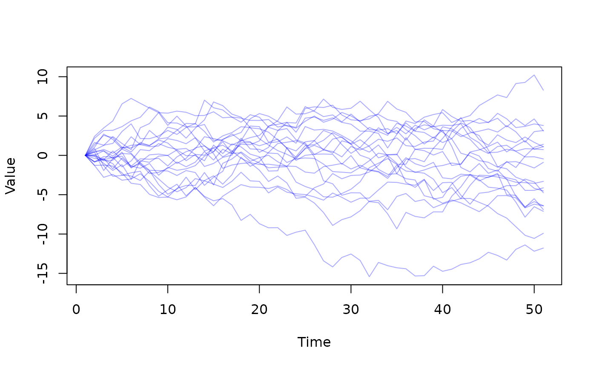

Load example generators from dust2. These generators exist primarily for the examples and documentation and are not (yet) very interesting. The examples will likely change as the package evolves and some may be removed.
Details
All models exist as source code in the package; to view the sir
model you could write:
file.show(system.file("examples/sir.cpp", package = "dust2"))sir
A simple SIR (Susceptible-Infected-Recovered) compartmental model. This model has parameters:
N: total population sizeI0: initial infected population size (when using dust_system_set_state_initial)beta: per-contact rate of infectiongamma: rate of recoveryexp_noise: noise parameter used in the comparison to data
The system will have compartments S, I, R, cases_cumul and
cases_inc
walk
A random walk in discrete time with Gaussian increments. This model has parameters:
sd: The standard deviation of the Gaussian update (per unit time)len: The number of independent walksrandom_initial`: Boolean, indicating if the initial position should be random (changes how dust_system_set_state_initial would initialise the system)
Examples
walk <- dust_example("walk")
walk
#>
#> ── <dust_system_generator: walk> ───────────────────────────────────────────────
#> ℹ This system runs in discrete time with a default dt of 1
#> ℹ This system has 3 parameters
#> → 'sd', 'len', and 'random_initial'
#> ℹ Use dust2::dust_system_create() (`?dust2::dust_system_create()`) to create a system with this generator
#> ℹ Use coef() (`?stats::coef()`) to get more information on parameters
sys <- dust_system_create(walk, list(sd = 1), 20)
y <- dust_system_simulate(sys, 0:50)
matplot(t(y[1, , ]), type = "l", col = "#0000ff55", lty = 1,
xlab = "Time", ylab = "Value")
